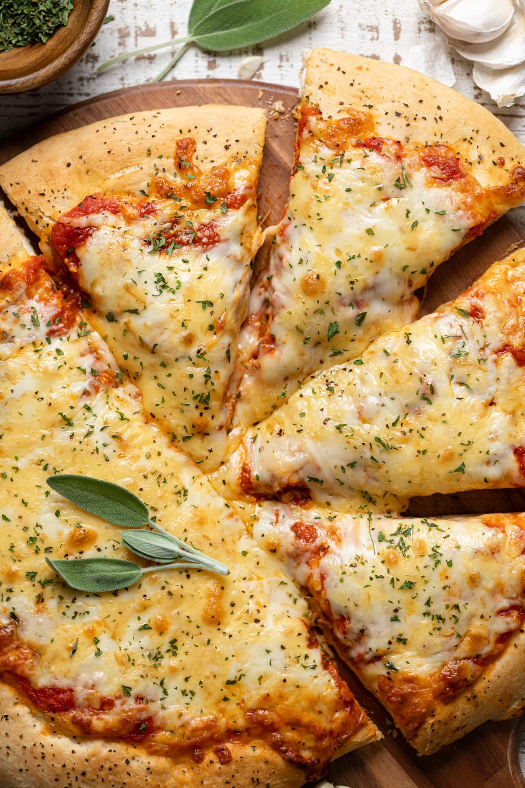

GC Pizza

Homemade garlic cheese pizza
Melty creamy cheese and garlic on a handmade dough. A recipe that satisfies your cravings,
in less than 15 min.
Ingredients
- 1 classic pizza dough (wood-fired Italian style)
Garlic pizza topping
- 2 tbsp extra virgin olive oil
- 2 tsp garlic (2 to 3 large, crushed)
- 1/8 tsp table salt
- 100 g mozzarella cheese (tightly packed cup, grated)
- 50 g parmesan (tightly packed cup, grated)
Steps
- Preheat oven to 250°C (230°C fan). Allow time to get it hot!!
- Garlic infused oil - Mix olive oil and garlic in a small bowl. Set aside to infuse with flavour for 10 minutes.
- Pizza base - Make and roll out the pizza base, stretch onto pan. (Recipe Notes)
- Top - Spread oil (and all garlic) onto the base, leaving the crust baked. Sprinkle with salt,
parmesan then mozzarella. (If using no-yeast base, spray/brush exposed crust with olive oil.)
- Bake 8 minutes, turning after 4 minutes, or until the the cheese has golden spots. Cut and eat!
Recipe notes
- Pizza base - Classic pizza dough (yeast) – 5 min hand knead or stand-mix, plus 4 to 6 hours rising time (across 2 rises)
- Garlic - For the best results, we want the garlic in a paste form so it fully infuses the oil with flavour. If you don’t have a garlic crusher, finely mince the garlic using your knife then smear it into a paste using the side of the knife.
- Cheese - 3. Cheese notes – Freshly shredded melts / spreads better because pre-shredded in packets are coated with anti-clumping agents. If using cups for measuring, shred first then pack it in tightly else you’ll be short – so sad. I cut hunks of cheese, weigh, then grate.